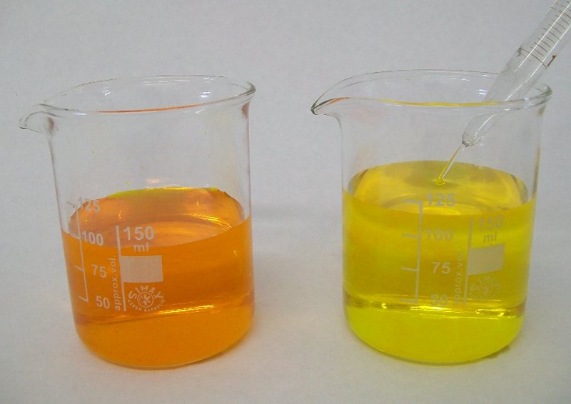

遷移元素
遷移元素は複数の酸化数をとり、酸化数が変わる反応は半反応式で書ける。
遷移元素の共通点
周期表の3〜12族の元素（12族を含めない場合もある。このサイトでは Zn は両性金属のページで扱う）で、どれも金属である。同じ元素でもいくつかの酸化数をとり、化合物やイオンに色がついたものが多い。錯イオンをつくりやすく、配位数は2・4・6などがある覚える。
鉄
つながる地図：炭素（CO が還元剤）・系統分離（H₂S で Fe²⁺ に下がり、希硝酸で Fe³⁺ にもどす）
コークスの燃焼でできた CO が還元剤としてはたらき、鉄鉱石の Fe2O3 を還元する。実際には Fe2O3 → Fe3O4 → FeO → Fe と段階的に還元される。溶鉱炉で得られる鉄（銑鉄）は炭素を多く含み、転炉で O2 を吹き込んで炭素を減らすと鋼になる覚える。
石灰石は、鉄鉱石の中の不純物（SiO2 など）をスラグとして除くために入れる。
希酸とは Fe2+ になる。濃硝酸には溶けない（不動態、酸化還元のページ）。
Fe2+ は空気中の O2 や H2O2 で酸化されて Fe3+ になりやすい。
逆に、Fe3+ は H2S のような還元剤で Fe2+ に還元される（系統分離の2段目）。
| Fe2+ | Fe3+ | |
|---|---|---|
| 水溶液の色 | 淡緑色 | 黄褐色 |
| NaOH 水溶液・アンモニア水 | 緑白色の沈殿 Fe(OH)2 | 赤褐色の沈殿（水酸化鉄(Ⅲ)） |
| K3[Fe(CN)6] | 濃青色の沈殿 | 暗褐色の溶液 |
| K4[Fe(CN)6] | 青白色の沈殿 | 濃青色の沈殿 |
| KSCN | 変化なし | 血赤色の溶液 |
水酸化物ができる反応（Fe2+ + 2OH− → Fe(OH)2）は酸塩基の形で書けるが、色と、どの試薬で何色になるかは覚える。
銅
硫酸酸性の硫酸銅(Ⅱ)水溶液中で、粗銅を陽極、純銅を陰極にして電気分解する。粗銅に含まれる Cu よりイオン化傾向の大きい金属（Zn・Fe・Ni）はイオンになって溶液に残り、小さい金属（Ag・Au）は溶けずに陽極の下に沈む（陽極泥）。
Cu2+（青色）に塩基を加えると青白色の Cu(OH)2 が沈殿する。アンモニア水を過剰に加えると、深青色のテトラアンミン銅(Ⅱ)イオンになって溶ける覚える。
加熱すると水が抜けて黒色の CuO になる。Cu の酸化数は ＋2 のまま。
銅を空気中で加熱すると黒色の酸化銅(Ⅱ) CuO になり、さらに高温（約1000 ℃以上）にすると赤色の酸化銅(Ⅰ) Cu2O になる。湿った空気中では、緑色のさび（緑青）を生じる。
CuSO4·5H2O は青色の結晶で、加熱して水和水を失うと白色の CuSO4 になる。白色の CuSO4 は水にふれると青色にもどるので、水の検出に使う。
銀
Ag は H2 よりイオン化傾向が小さく、希塩酸・希硫酸には溶けない。硝酸や熱濃硫酸には溶けて Ag+ になる。
Ag+ に塩基を加えると、水酸化物ではなく褐色の酸化銀 Ag2O が沈殿する。Ag の酸化数は ＋1 のまま覚える。
アンモニア水を過剰に加えると、Ag2O は溶けて無色の [Ag(NH3)2]+ になる。AgCl もアンモニア水に溶ける（ハロゲンのページ）。
AgCl 白色、AgBr 淡黄色、AgI 黄色、Ag2CrO4 赤褐色、Ag2S 黒色。ハロゲン化銀は感光性をもつ。
クロム
つながる地図：酸化還元（Cr₂O₇²⁻ と MnO₄⁻ はどちらも段の上から下りる酸化剤）
黄色のクロム酸イオン CrO42− の水溶液を酸性にすると、赤橙色の二クロム酸イオン Cr2O72− になり、塩基性にすると戻る。Cr の酸化数はどちらも ＋6 で、酸化還元ではなく H+ のやりとりである。色は覚える覚える。
硫酸酸性で強い酸化剤としてはたらき、緑色の Cr3+ になる。
CrO42− は Ag+ と Ag2CrO4（赤褐色）、Pb2+ と PbCrO4（黄色）、Ba2+ と BaCrO4（黄色）の沈殿をつくる。

マンガン
赤紫色の MnO4− は、酸性ではほぼ無色の Mn2+ に、中性・塩基性では黒色の MnO2 になる。酸化還元滴定では、赤紫色が消えなくなったところを終点にする。
濃塩酸と加熱すると酸化剤として Cl2 を発生させる（ハロゲンのページ）。H2O2 や KClO3 の分解では触媒としてはたらき、自身は変化しない。
過去問で確かめる
新しい年度から順に並べている。正答率は大学入試センターの公表値（2024年以降）。問題のリンクは新しいタブで開く。
| 年度・試験 | 大問・問 | 問うたこと | 道具 | 正答率 | 問題 | 動画 |
|---|---|---|---|---|---|---|
| 2026共通テスト | 第3問 問4解答番号 16 | 遷移元素の性質（配位数・錯イオンなど）の記述 | 覚える | 61.2% | 問題 | 第3問の解説 |
| 2026共通テスト | 第3問 問5 a解答番号 17 | FeS が沈殿する条件（[H⁺]） | 酸塩基 | 56.4% | 問題 | 第3問の解説 |
| 2026共通テスト | 第5問 問1 a解答番号 28 | Cr の酸性・塩基性での存在形 | 酸塩基覚える | 50.3% | 問題 | 第5問の解説 |
| 2025共通テスト | 第3問 問1解答番号 13 | 遷移元素の化合物（Fe³⁺・錯塩）の記述の誤り | 覚える | 63.7% | 問題 | 第3問の解説 |
| 2025共通テスト | 第5問 問3 a解答番号 31 | バナジウムイオン VO²⁺ の酸化数 | 酸化還元 | 73.7% | 問題 | 第5問の解説 |
| 2024共通テスト | 第3問 問3解答番号 16 | ステンレス鋼の主成分の元素 | 覚える | 37.0% | 問題 | 第3問の解説 |
| 2024共通テスト | 第3問 問4 a解答番号 18 | NiS と CuCl₂ の反応で酸化される元素 | 酸化還元 | 62.4% | 問題 | 第3問の解説 |
| 2024共通テスト | 第3問 問4 b解答番号 19 | ニッケルの製錬で消費された Cl₂ の量 | 酸化還元 | 29.2% | 問題 | 第3問の解説 |
| 2024共通テスト | 第3問 問4 c解答番号 20 | 析出した Ni の質量を文字式で表す | 酸化還元 | 44.9% | 問題 | 第3問の解説 |
2010〜2023 年の設問（57問）
| 年度・試験 | 大問・問 | 問うたこと | 道具 | 正答率 | 問題 | 動画 |
|---|---|---|---|---|---|---|
| 2023共通テスト | 第2問 問2解答番号 10・11 | AgNO₃・NaCl 水溶液の電気分解の電極反応の記述 | 酸化還元 | 問題 | ||
| 2023共通テスト | 第2問 問4 a解答番号 13 | H₂O₂ の分解と触媒（MnO₂・FeCl₃）の記述 | 覚える酸化還元 | 問題 | ||
| 2023共通テスト | 第3問 問2解答番号 17・18 | 金属イオンの系統分離の結果から含まれるイオンを決める | 覚える | 問題 | ||
| 2021共通テスト | 第3問 問2解答番号 13・14 | Ag・Pb・Sn・Zn を酸への溶解性・塩化物・族から決める | 覚える | 問題 | ||
| 2021共通テスト | 第3問 問3 a解答番号 15 | Fe²⁺ の確認に使う試薬 | 覚える | 問題 | ||
| 2021共通テスト | 第3問 問3 b解答番号 16 | 光で Fe(Ⅲ)シュウ酸錯イオンが還元されるときの C₂O₄²⁻ の酸化量 | 酸化還元 | 問題 | ||
| 2021共通テスト | 第3問 問3 c解答番号 17 | 錯イオンの変化した割合を CaC₂O₄ の量から求める | 酸化還元 | 問題 | ||
| 2020センター試験 | 第2問 問1 a解答番号 1 | スチールウールと酸素の燃焼でできる鉄の酸化物を決める | 酸化還元 | 問題 | ||
| 2020センター試験 | 第3問 問1解答番号 1 | 無機物質の性質と用途（ニクロム・Al・CoCl₂・Sr） | 覚える | 問題 | ||
| 2020センター試験 | 第3問 問2解答番号 2 | 酸化物（Ag₂O・CuO・MnO₂・SiO₂）の生成・反応の記述 | 酸塩基酸化還元覚える | 問題 | ||
| 2020センター試験 | 第3問 問3 a解答番号 3 | Ag⁺・Al³⁺・Pb²⁺・Zn²⁺ に希塩酸を加えたときの沈殿 | 覚える | 問題 | ||
| 2020センター試験 | 第3問 問3 b解答番号 4・5・6 | 沈殿 A からの Ag⁺・Pb²⁺ の分離操作と沈殿・ろ液 | 覚える酸塩基 | 問題 | ||
| 2019センター試験 | 第2問 問4 a解答番号 4 | 粗銅の電解精錬でイオンとして溶けている不純物の金属 | 酸化還元覚える | 問題 | ||
| 2019センター試験 | 第3問 問1解答番号 1 | 身近な無機物質（Ar・硫黄の同素体・P₄O₁₀・セラミックス・銑鉄） | 覚える | 問題 | ||
| 2019センター試験 | 第3問 問3解答番号 3 | 錯イオンの生成・色・配置のうち誤りを選ぶ | 覚える | 問題 | ||
| 2019センター試験 | 第3問 問5解答番号 6 | K₂CrO₄ と AgNO₃ の混合比と沈殿の質量のグラフ | 覚える | 問題 | ||
| 2018センター試験 | 第1問 問2解答番号 2 | 典型元素と遷移元素に関する記述（アルカリ土類・両性元素・酸化数） | 覚える | 問題 | ||
| 2018センター試験 | 第3問 問1解答番号 1 | 身近な無機物質（Al₂O₃・CaCl₂・TiO₂・SiO₂・ZnO）の性質と用途 | 覚える | 問題 | ||
| 2018センター試験 | 第3問 問2解答番号 2 | ハロゲンの単体・化合物の性質（F₂・HF・AgCl・HClO₂・I₃⁻） | 覚える酸化還元 | 問題 | ||
| 2017センター試験 | 第3問 問1解答番号 1・2 | 身近な無機物質（Pb・粘土・ガラス・Cu・次亜塩素酸塩・BaSO₄）の記述 | 覚える酸化還元 | 問題 | ||
| 2017センター試験 | 第3問 問2解答番号 3 | 遷移元素の触媒反応（鉄粉・四酸化三鉄・V₂O₅・白金・排ガス浄化） | 覚える酸化還元 | 問題 | ||
| 2017センター試験 | 第3問 問4解答番号 5 | 黄銅を溶かし H₂S を通して沈殿した量から Cu の含有率 | 覚える | 問題 | ||
| 2017センター試験 | 第3問 問5解答番号 6 | MnO₂ と濃塩酸から生じる Cl₂ の体積 | 酸化還元 | 問題 | ||
| 2017センター試験 | 第3問 問6解答番号 7 | 金属板の組合せと電流の向きから Mg・Zn・Cu を決める | 酸化還元覚える | 問題 | ||
| 2016センター試験 | 第2問 問6解答番号 6 | KMnO₄ と K₂Cr₂O₇ の酸化剤としての量的関係の比 | 酸化還元 | 問題 | ||
| 2016センター試験 | 第3問 問2解答番号 2 | 金属単体と合金（K・Ag・Cu・Fe・Zn・水素吸蔵合金）の性質 | 覚える酸化還元 | 問題 | ||
| 2016センター試験 | 第3問 問5解答番号 7 | Al³⁺・Ba²⁺・Fe³⁺・Zn²⁺ の分離操作と沈殿・ろ液の性質 | 酸塩基覚える | 問題 | ||
| 2016センター試験 | 第3問 問6解答番号 8 | 鉄ミョウバンの水溶液に Ba²⁺ を加えたときの沈殿量から純度 | 覚える | 問題 | ||
| 2015センター試験 | 第2問 問5解答番号 6 | KMnO₄ で H₂O₂ を滴定する量的関係 | 酸化還元 | 問題 | ||
| 2015センター試験 | 第3問 問3解答番号 3 | 銅の性質・化合物・合金 | 覚える酸塩基 | 問題 | ||
| 2015センター試験 | 第3問 問4解答番号 4 | 二つの元素に共通する性質（炎色反応・酸化数・硫化物の色など） | 覚える | 問題 | ||
| 2015センター試験 | 第3問 問5解答番号 5 | Cu–Al 混合物に酸を加えて出る H₂・NO₂ の量から物質量比 | 酸化還元 | 問題 | ||
| 2015センター試験 | 第3問 問6 a解答番号 6 | Fe と Cu の接触での青・赤の呈色の原因となるイオン | 酸化還元覚える | 問題 | ||
| 2015センター試験 | 第3問 問6 b解答番号 7 | Fe と Zn の接触での呈色の色 | 酸化還元覚える | 問題 | ||
| 2014センター試験化学Ⅰ | 第2問 問4解答番号 12 | 下線の原子が還元されている反応を選ぶ | 酸化還元酸塩基 | 問題 | ||
| 2014センター試験化学Ⅰ | 第3問 問1解答番号 16 | 身のまわりの金属（Al・Au・Cu・Sn・Li）の性質 | 覚える | 問題 | ||
| 2014センター試験化学Ⅰ | 第3問 問2解答番号 17 | KMnO₄ と H₂O₂ の反応の酸化数の変化 | 酸化還元 | 問題 | ||
| 2014センター試験化学Ⅰ | 第3問 問5解答番号 20 | 濃硫酸の性質（酸化作用・不揮発性など）の使い分け | 酸化還元覚える酸塩基 | 問題 | ||
| 2014センター試験化学Ⅰ | 第3問 問7解答番号 22 | 沈殿をつくる試薬の順序から金属イオンを分離 | 覚える | 問題 | ||
| 2013センター試験化学Ⅰ | 第1問 問2解答番号 3 | 周期表と族ごとの性質の記述 | 覚える | 問題 | ||
| 2013センター試験化学Ⅰ | 第1問 問5解答番号 6 | 金属酸化物の還元による質量減少から酸化数を決める | 酸化還元 | 問題 | ||
| 2013センター試験化学Ⅰ | 第1問 問6解答番号 7 | 身のまわりの事柄のうち酸化還元を含まないもの | 酸化還元 | 問題 | ||
| 2013センター試験化学Ⅰ | 第2問 問3解答番号 10 | 酸化剤としてはたらく物質の数を数える | 酸化還元 | 問題 | ||
| 2013センター試験化学Ⅰ | 第3問 問1解答番号 15 | 工業的製法の原料と反応物の記述 | 覚える酸塩基 | 問題 | ||
| 2013センター試験化学Ⅰ | 第3問 問5解答番号 20 | 銅の化合物・単体の性質と電解精錬 | 覚える酸化還元 | 問題 | ||
| 2013センター試験化学Ⅰ | 第3問 問6解答番号 21 | FeCl₃ からの沈殿と加熱で得る Fe₂O₃ の質量 | 酸塩基覚える | 問題 | ||
| 2012センター試験化学Ⅰ | 第2問 問5解答番号 12 | 酸化還元反応でない反応を選ぶ | 酸化還元酸塩基 | 問題 | ||
| 2012センター試験化学Ⅰ | 第3問 問2解答番号 16 | 酸化物と水・酸・塩基との反応の生成物 | 酸塩基酸化還元 | 問題 | ||
| 2012センター試験化学Ⅰ | 第3問 問5解答番号 19 | 褐色の沈殿を生じる化合物の組合せ | 覚える | 問題 | ||
| 2011センター試験化学Ⅰ | 第3問 問2解答番号 2 | 化合物の加熱による変化（水酸化物・水和物・炭酸塩） | 酸塩基覚える | 問題 | ||
| 2011センター試験化学Ⅰ | 第3問 問4解答番号 4 | 金属と酸（希硝酸・濃硝酸・塩酸など）との反応 | 酸化還元覚える | 問題 | ||
| 2011センター試験化学Ⅰ | 第3問 問5解答番号 5 | Fe₃O₄ を CO で還元するときの CO の量 | 酸化還元 | 問題 | ||
| 2011センター試験化学Ⅰ | 第3問 問6解答番号 6 | 沈殿を生じるイオンの組合せ | 覚える | 問題 | ||
| 2011センター試験化学Ⅰ | 第3問 問7解答番号 7 | 塩の名称と構成イオンの組合せ | 覚える | 問題 | ||
| 2010センター試験化学Ⅰ | 第2問 問3 a解答番号 4 | KMnO₄ で H₂O₂ を滴定する量的関係 | 酸化還元 | 問題 | ||
| 2010センター試験化学Ⅰ | 第3問 問2解答番号 2 | 水溶液を少量・過剰に加えたときの沈殿の溶け方 | 覚える酸塩基 | 問題 | ||
| 2010センター試験化学Ⅰ | 第3問 問3 b解答番号 4 | 金属単体の性質（Mg・Al・Ca・Sn・Ag・Hg） | 覚える酸塩基 | 問題 |
次に読むページ：覚えること
写真の出典
- 左が CrO₄²⁻（黄色）、右が Cr₂O₇²⁻（赤橙色）：Capaccio、Wikimedia Commons「Chromate dichromate equilibrium.png」（CC BY-SA 3.0）